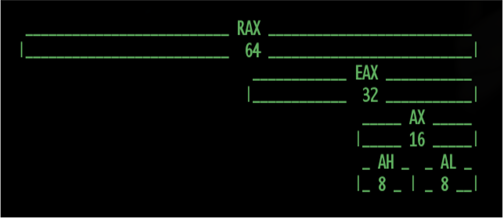

Assembly
Primeiro Passo Para Engenharia Reversa
UserX (A.K.A Victor Flores)
Assembly!
Não é um bixo de sete cabeças!Segmentação de Memória!
Segmento .Data
Local em que as variáveis globais inicializadas ficam.
.data
Hello_ZEROED: .asciz "Hello World!!"
Hello_NO_ZEROED .ascii "Hello World!!"
Inteiro: .int 10
SHORT: .short 2
FLOAT: .float 3.14px
DOUBLE: .double. 2.341253234
Segmento .BSS
(Block Started by Symbol)
Local em que as variáveis não inicializadas ficam.
Exemplo:
.bss
some_static_global_var:
.lcomm 32
some_global_var:
.comm 32
.bss
some_static_global_var:
.lcomm 32
some_global_var:
.comm 32
Segmento .Text
Local em que as instruções do programa Ficam.
Segmento Pilha (stack)
Local em que as variáveis locais da função atual ficam alocadas
Layout
- .Data
- Variáveis globais Inicializadas
- .BSS
- Variáveis globais não inicializadas
- .text
- As instruções de execução propriamente ditas
- Stack Frame
- Variáveis locais da função em execução
Registradores
O que são?
Registradores Importantes
- RBP - Base Pointer
- RSP - Stack Pointer
- RIP - Instruction Pointer
Divisão Interna dos Registradores

Exemplo:
int
main (void) { | push %rbp
int a = 1; | mov %rsp, %rbp
int b = 2; | sub 0x10, %rsp
int c = 3; |
int d = 4; | mov $0x01, -0x04(%rbp)
| mov $0x02, -0x08(%rbp)
| mov %0x03, -0x0c(%rbp)
return 0; | mov $0x04, -0x10(%rbp)
} |
| mov $0x00, %rax
|
| mov %rbp, %rsp
| pop %rbp
| ret
int
main (void) { | push %rbp
int a = 1; | mov %rsp, %rbp
int b = 2; | sub 0x10, %rsp
int c = 3; |
int d = 4; | mov $0x01, -0x04(%rbp)
| mov $0x02, -0x08(%rbp)
| mov %0x03, -0x0c(%rbp)
return 0; | mov $0x04, -0x10(%rbp)
} |
| mov $0x00, %rax
|
| mov %rbp, %rsp
| pop %rbp
| ret
Detalhamento
push %rbp # salvando a base da pilha, na pulha.
mov %rsp, %rbp # Setando a nova base da pulha para o topo da antiga
sub $0x10, %rsp # alocando 4 inteiros (4*4 = 16 = 0x10)
mov $0x1, -0x4(%rbp) # atribuindo valores às variáveis
mov $0x2, -0x8(%rbp) # " "
mov $0x3, -0xc(%rbp) # " "
mov $0x4, -0x10($rbp) # " "
mov $0x0, %rax # zerando rax (retorno da função)
mov %rbp, %rsp # setando a topo da pilha igual a base
pop %rbp # restaurando base da natiga pilha que havia sido salva
ret # saltando para o endereço de retorno
Call Instruction
.
.
mov $FMT_STR, %rdi # considerando STR_FMT = "%s\n"
mov $MSG, %rsi # considerando MSG = "Hello World!!"
call fpritnf
call addr
# /* Na realidade executa: */
push %rip
jmp address
.
.
mov $FMT_STR, %rdi # considerando STR_FMT = "%s\n"
mov $MSG, %rsi # considerando MSG = "Hello World!!"
call fpritnf
call addr
# /* Na realidade executa: */
push %rip
jmp address
Quem é?
- ISP
- Servidor Local
- NS Secundário
Função
Armazenar de acordo a TTL
Secundários
Transferência de Zona
- AXFR
- IXFR
DNS Reverso
rDNS
Objetivos
- Diagnóstico
- Validação de e-mail
Funcionamento
- Registro tipo PTR
-
Inversão de sequência
1.2.3.4 >> 4.3.2.1... - ARPA > in-addr > 4.3...
- ARPA > ip6 > f.c...
Dúvidas??
Onde aprender mais?
- Vídeos
- Kretcheu Vídeo Blog
- GTER 36, Rafael Justo
- Livros
- Redes: Guia Prático, Carlos E. Morimoto
- Redes de Computadores, Andrew S. Tanenbaum
- DNS for Rockets Scientists, Zytrax